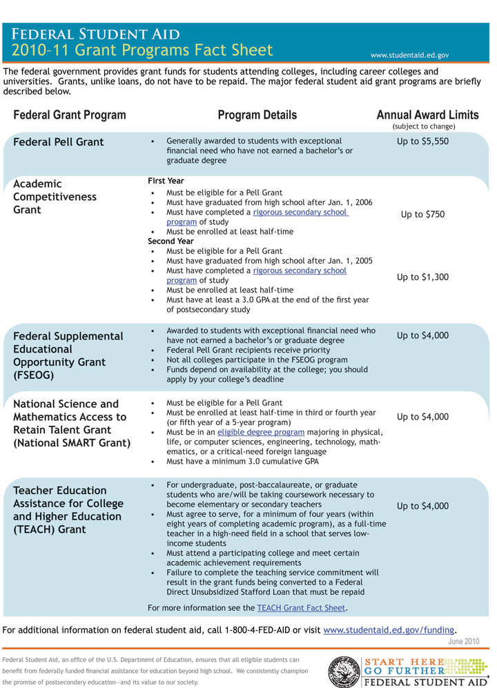

Assess your present knowledge and attitudes.
| Yes | Unsure | No | |
|---|---|---|---|
| 1. I am confident I will make it through college without any financial hardships. | |||
| 2. I realize that while in college I won’t have as much money to spend on things as in the past. | |||
| 3. I plan to avoid debt as much as possible while in college so I don’t have large loans to pay back after college. | |||
| 4. I am willing to make sacrifices and spend less on some things while in college. | |||
| 5. I keep track of all my expenditures and maintain a budget so that I know when I am spending too much. | |||
| 6. I believe I can have a happy and fulfilling life while a student without having a lot of money. | |||
| 7. I know the best kinds of jobs to seek while in college. | |||
| 8. I always pay off the full balance on my credit cards when the statement arrives. | |||
| 9. I have applied for every possible form of financial aid to help pay for college. |
Think about how you answered the questions above. Be honest with yourself. On a scale of 1 to 10, how would you rate your financial health at this time?
| In financial trouble | Very financially secure | |||||||||||||||||
|---|---|---|---|---|---|---|---|---|---|---|---|---|---|---|---|---|---|---|
| 1 | 2 | 3 | 4 | 5 | 6 | 7 | 8 | 9 | 10 | |||||||||
In the following list, circle the three most important financial areas in which you think you may need to improve:
Are there other areas in which you can improve your financial well-being and avoid potential money problems while in college? Write down other things you feel you need to work on.
__________________________________________________________________
__________________________________________________________________
__________________________________________________________________
Here’s what we’ll work on in this chapter:
What is a chapter on personal finances doing in a book on student success? If you’re a new college student you may not yet have money problems or issues—but most college students soon do. It doesn’t matter whether you’re a “traditional” college student enrolled in college just after high school or a “nontraditional” student returning to school.
Younger students are likely to confront money issues for several reasons:
Nontraditional students who have worked or started a family before attending college may have already learned to manage their money well but usually still confront some financial issues:
Almost everyone eventually has money issues at college, and they can impact your academic success. Money problems are stressful and can keep you from concentrating on your studies. Spending too much may lead you to work more hours than you might otherwise, giving you less time to study. Or you might take fewer classes and thus spend more years in college than needed. Worse yet, money problems cause many students to drop out of college entirely.
But it doesn’t have to be this hard. Like other skills, financial skills can be learned, and they have lifelong value. This chapter will help you
It’s expensive to go to college. College tuition has risen for decades at virtually all schools, and very few students are fortunate enough to not have to be concerned with this reality. Still, there are things you can do to help control costs and manage your finances while in college. Begin by thinking about your financial goals.
Whatever it is you plan to do in your future, whether work or other activities, your financial goals in the present should be realistic to enable you to fulfill your plan. Consider these scenarios:
Keri entered college planning to major in business. Her family was not able to give her much financial support, but she chose to attend an expensive private college because she thought it would help her get into a good graduate business school. She had to take large loans to pay her tuition, but she wasn’t concerned about a budget because she assumed she’d make a lot later on and be able to easily pay off the loans. Yet when she graduated and had to begin making payments on her private bank loans, she discovered she couldn’t afford to go straight to business school after all. She put her dream on hold for a few years and took a job she didn’t much like.
Jorge had worked a few years after high school but finally decided that he needed a college degree to get the kind of job he wanted. He was happy with his life otherwise and kept his nice apartment and car and enrolled in a couple night classes while continuing to work full time during the day. He was surprised how much he had to study, however, and after a couple months he felt he was struggling. He just didn’t have enough time to do it all—so he dropped first one class and then, a couple weeks later, the other. He told himself that he’d try it again in a year or two, but part of him wondered how anyone could ever get through college while working.
What Keri and Jorge have in common is a conflict between their financial goals and realities. Both were motivated to succeed in college, and both had a vision for their future. But both were unsuccessful in finding ways to make their dreams come true—because of money issues.
Could they have done things differently? Maybe Keri could have gone to a less expensive school and still reached her goal, or maybe she could have avoided such heavy student loans by working summers and part time during the school year. Maybe Jorge could have reduced his living expenses and cut back his work hours to ensure he could balance school and work better. Maybe both were spending thousands of dollars a year on things they could have done without if only they’d thought through their goals and learned to live within a budget.
Taking control of your personal finances begins with thinking about your goals and deciding what really matters to you. Here are some things to think about:
There are no easy answers to such questions. Most people would like enough money to have and do what they want, low enough expenses that they don’t have to work too much to stay on budget, and enough financial freedom to choose activities without being swayed by financial concerns. Few college students live in that world, however. Since you will have to make choices, it’s important first to think about what really matters to you—and what you’re willing to sacrifice for a while in order to reach your goals.
That often becomes an issue for college students. You begin by setting up a realistic budget and sticking to it. A budgetAn organized plan for coordinating income and expenditures. is simply the best way to balance the money that comes in with the money that goes out.
For most college students, the only way to increase the “money coming in” side of the budget is to work. Even with financial support from your family, financial aidFunds or a tuition waiver in a formal program designed to help students pay for college; forms of financial aid include scholarships, grants, student loans, and work study programs. from the college, your savings from past jobs, and the like, you will still need to work if all your resources do not equal the “money going out” side of the budget. The major theme of this chapter is avoiding debt except when absolutely necessary to finance your education. Why is that so important? Simply because money problems and debt cause more people to drop out of college than any other single factor.
This chapter includes discussion of how students can earn money while in college and the benefits of working. But working too much can have a negative impact by taking up time you might need for studying. It’s crucial, therefore, whenever you think about your own financial situation and the need to work, to also think about how much you need to work—and consider whether you would be happier spending less if that meant you could work less and enjoy your college life and studies more. As we’ll see later, students often spend more than they actually need to and are often happier once they learn to spend less.
What is the leading reason some students have to drop out of college?
__________________________________________________________________
List three or more things you would be willing to give up or cut back on in order to be able to finance your college education.
__________________________________________________________________
Most college students work while in school. Whether you work summers only or part time or full time all year, work can have both benefits and drawbacks. The difference may result as much from the type of job you work as from the number of hours you work.
In addition to helping pay the bills, a job or internship while in school has other benefits:
Work or internship experience related to your future career has significant value. Not all students can find such opportunities in their community, however. But even a job or volunteering outside your field can have value and say something about you to future employers. Your job may demonstrate that you have initiative, are responsible, are a team player or can work independently, and can take on financial responsibility. Potential future employers will check your work references. Having an employer from your college years say you did a good job, were always on time to work, and were honest and responsible in doing your job definitely gives you an advantage over students who graduate without having worked at all.
At the same time, some jobs contribute more to your overall college experience. Remember, you’re in college for an education and to gain a wide range of skills—not just for the degree. The best student jobs help you engage more deeply in the college experience, while the wrong kind of job gets in the way of that experience. Here are some factors to consider as you look for a job:
These factors can make a job ideal for college students, but in the real world many students will have to work less-than-ideal jobs. Working at a fast food restaurant or overnight shipping company may not seem very glamorous or offer the benefits described previously, but it may be the only job available at present. Don’t despair—things can always change. Make the money you need to get by in college but don’t become complacent and stop looking for more meaningful work. Keep your eyes and ears open for other possibilities. Visit the campus student employment office frequently (or check online) for new postings. Talk to other students.
At the same time, even with a dull job, do your best and keep a good attitude. Remember that your boss or supervisor may someday be a work reference who can help (or hurt) your chances of getting a job you really want.
The number of hours college students work per week varies considerably, from five to ten hours a week to full time and everywhere in between. Before deciding how much you need to work, first make a detailed budget as described later. Your goal should be to make as much as you need, and hopefully a little more to save, but first you need to know your true need. Remember your goals in college and stay focused on your education. Cut back on your optional spending so that you don’t have to work so many hours that your studies are impacted.
Start at your campus financial aid office or student employment office. If they don’t have anything right for you at first, check back frequently for new job postings.
For off-campus jobs, check the classified ads in your local newspaper and CraigslistA free online listing of classified ads, organized by city, useful for job searches; access through Craigslist.org.. Many jobs are never advertised, however, so ask friends, family members, and other students. Visit appropriate companies in your area and ask if they have openings.
If you applied for financial aid when you applied to your college, you probably already know whether you qualify for a work study program. Often these jobs are ideal because they are designed for students. If your financial circumstances change, be sure to check in with the financial aid office because your eligibility may have changed.
Many government agencies also have summer jobs or internships for college students. This work may be an ideal way to gain experience related to your chosen field. (See “Additional Resources” below for more information.)
If you have energy and initiative, you can create your own work. While it may take some time to get started, flexibility and being your own boss can make up for this drawback. Students often make money in ways like these:
Campus jobs and work study. Check with your campus student employment or financial aid office.
Broad listing of links for federal government jobs and internships for students. See http://www.studentjobs.gov and http://www.students.gov.
Student Opportunities at the Environmental Protection Agency (EPA). See http://www.epa.gov/careers/stuopp.html.
Student Opportunities at the U.S. Department of Defense. See http://hrd.whs.mil/page.cfm?info=20.
Student Opportunities at the U.S. Department of Health and Human Services. See http://career.psc.gov/studentopps.taf?_Title=Student.
Student Opportunities at the National Science Foundation. See http://www.nsf.gov/about/career_opps/careers/student.jsp.
Student Internships at the State Department. See http://careers.state.gov/students/programs.html#SIP.
A growing percentage of students are working full time when they return to school, and many continue in the same jobs. If you’re in this situation, you know that balancing work and college is one of the most difficult things you’ve ever done. You’re used to working—but not used to finding time for class and studying at the same time. You likely feel harried and frustrated at times, and you may even start to wonder if you’re cut out for college. The time may come when you start thinking about dropping classes or leaving college altogether. It may be hard to stay motivated.
If you start feeling this way, focus on your big goals and don’t let the day-to-day time stresses get you down. As difficult as it may be, try to keep your priorities, and remember that while you face temporary difficulties now, a college degree is forever.
If you ever feel the temptation to quit, see your college counselor to explore all your options. Resources may be available that you don’t know about.
What are the primary benefits of a student job on campus? (List as many as you can.)
__________________________________________________________________
__________________________________________________________________
__________________________________________________________________
Considering your abilities and interests, what would be your ideal job while a college student?
__________________________________________________________________
Most people aren’t really sure where a lot of their money goes. Take this survey to see how much you remember about how you have spent money recently.
Do your best to remember how much you have spent in the last thirty days in each of the following categories:
| Category | Amount in Dollars (Per Month) |
|---|---|
| Coffee, soft drinks, bottled water | |
| Newspapers, magazines | |
| Movies, music concerts, sports events, night life | |
| Fast food lunches, snacks, gum, candy, cookies, and so on | |
| Social dining out with friends (lunch, dinner) | |
| Music, DVDs, other personal entertainment | |
| Ringtones and mobile phone applications | |
| Bank account fees, ATM withdrawal fees | |
| Credit card finance charges | |
| Lottery tickets | |
| Cigarettes, smokeless tobacco | |
| Beer, wine, liquor purchased in stores | |
| Beer, wine, liquor purchased in restaurants and bars | |
| Gadgets, video or computer games, and so on | |
| Gifts | |
| Hobbies | |
| Travel, day trips | |
| Total: |
Now be honest with yourself: is this really all you spent on these items? Most of us forget small, daily kinds of purchases or underestimate how much we spend on them—especially when we pay with cash.
You’ll notice also that this list does not include essential spending for things like room and board or an apartment and groceries, utilities, college tuition and books, and so on. The greatest potential for cutting back on spending is in the area of optional things.
More people get into financial trouble because they’re spending too much than because they’re making (or receiving) too little. While spending may seem a simple matter—“I need to buy this, I’d like to buy that”—it’s actually very complex. America is a consumer society, and we’re deluged by advertisements promising that we’ll be happier, more successful, better liked by more people, sexier, and everything else if only we buy this. Companies have spent billions of dollars researching how to manipulate our buying behavior. No wonder it’s so tough to resist these pressures!
Why does a person feel compelled to buy fast food for lunch, or a new CD with a song they just heard on the radio, or a new video game a friend says is so good, or a new article of clothing? We owe it to ourselves to try to understand our own attitudes about money and spending. Here’s a good place to start:
Before you can make an effective budget, you need to look at what you’re spending money on now and consider what’s essential and what’s optional. Essential costs are the big things:
These things are sometimes called fixed costs, but that term can be misleading. If you have the option to move to a less expensive apartment that is smaller or a few blocks farther away, you can partly control that cost, so it’s not really “fixed.” Still, for most people, the real savings come from spending less on optional things.
Look back at the amounts you wrote in the earlier exercise “Where Does the Money Go?” These things are “optional” expenses—you can spend more or less on them as you choose. Most people spend by habit, not really thinking about where their money goes or how quickly their spending adds up. If you knew you were spending more than a thousand dollars a year on coffee you buy every day between classes, would that make you think twice? Or another thousand on fast food lunches rather than taking a couple minutes in the morning to make your lunch? When people actually start paying attention to where their money goes, most are shocked to see how the totals grow. If you can save a few thousand dollars a year by cutting back on just the little things, how far would that go to making you feel much better about your finances?
Following are some general principles for learning to spend less. The “Tips for Success” then lists specific ways you can try to follow these principles in your daily life. Remember, spending money doesn’t define who you are!
Budgeting involves analyzing your income and expenses so you can see where your money is going and making adjustments when needed to avoid debt. At first budgeting can seem complex or time consuming, but once you’ve gone through the basics, you’ll find it easy and a very valuable tool for controlling your personal finances.
Why create and manage a budget? Going to college changes your financial situation. There are many new expenses, and you likely don’t know yet how your spending needs and habits will work out over the long term. Without a budget, it’s just human nature to spend more than you have coming in, as evidenced by the fact that most Americans today are in debt. Debt is a major reason many students drop out of college. So it’s worth it to go to the trouble to create and manage a budget.
Managing a budget involves three steps:
Many college students receive money or financial assistance from a number of sources. To track income in a monthly budget, consider all your sources of funds and convert them to a monthly number. For example, you may receive a student loan once during the year or you may work more in the summer and save up money then. To calculate your monthly projected income, add up your income sources and divide that number by the number of months you will be using the income. For example, if you have saved $4,800 that you can spend over two years of college, divide the $4,800 by twenty-four months to arrive at a monthly income of $200 from those savings. Do the same with scholarship grants, student loans, monetary gifts, and so on.
If some of your college costs are being paid directly by parents or others, do not include that money in your budget as either income or an expense. Base your monthly budget on just those funds and expenses that involve you directly.
Use Table 11.1 "Monthly Income and Funds" to record and total all your income on a monthly basis. If you must estimate some sources, estimate low rather than high; it’s a bad trap to assume you’ll have more money coming in than you actually do—that’s a real budget buster.
Table 11.1 Monthly Income and Funds
| Source of Income/Funds | Amount in Dollars |
|---|---|
| Job income/salary (take-home amount) | |
| Funds from parents/family/others | |
| Monthly draw from savings | |
| Monthly draw from financial aid | |
| Monthly draw from student/other loans | |
| Other income source: ________________ | |
| Other income source: ________________ | |
| Other income source: ________________ | |
| Total Monthly Incoming: |
Tracking expenditures is more difficult than tracking income. Some fixed expenses (tuition, rent, etc.) you should already know, but until you’ve actually written down everything you spend in a typical month, it’s hard to estimate how much you’re really spending on cups of coffee or smoothies between class, groceries, entertainment, and the like. The best way to itemize this side of your budget is to write down everything you spend—everything, every bottle of water and cookie, coins into parking meters, and so forth—for a full month. Then you can total up the different categories of expenses more realistically. We urge you to immediately start writing everything down in a small notebook you carry with you. You may be astonished how small purchases add up.
While you’re writing this down for a month, go ahead and work through the expenditure half of your budget, using Table 11.2 "Monthly Expenditures". Set aside an hour or two to look through your past financial records, checkbook register and debit cardA card like a credit card that functions like a check and through which a purchase or cash withdrawal from an automated teller machine (ATM) is made directly from the holder’s bank account. transactions, past utility bills, credit card statements, and so on to get the numbers to put in your expenses budget. Make estimates when you have to, but be honest with yourself and don’t underestimate your usual spending. There will be plenty of time down the road to adjust your budget—but don’t start out with an unrealistic plan. Write “est” (for estimated”) next to numbers in your budget that you’re guessing at.
Once you have listed your routine expenditures using Table 11.2 "Monthly Expenditures", write out your own budget categories that fit how you actually spend money. Everyone is unique, and you want your budget to be easy to use for your own life and habits.
As noted previously with income, if some of your expenses are paid directly by others, do not include them here. Base your monthly budget on just those funds and expenses that involve you directly.
Table 11.2 Monthly Expenditures
| Expenditures | Amount in Dollars |
|---|---|
| Tuition and fees (1/12 of annual) | |
| Textbooks and supplies (1/12 of annual) | |
| Housing: monthly mortgage, rent, or room and board | |
| Home repairs | |
| Renter’s insurance | |
| Property tax | |
| Average monthly utilities (electricity, water, gas, oil) | |
| Optional utilities (cell phone, Internet service, cable television) | |
| Dependent care, babysitting | |
| Child support, alimony | |
| Groceries | |
| Meals and snacks out (including coffee, water, etc.) | |
| Personal expenses (toiletries, cosmetics, haircuts, etc.) | |
| Auto expenses (payments, gas, tolls) plus 1/12 of annual insurance premium—or public transportation costs | |
| Loan repayments, credit card pay-off payments | |
| Health insurance (1/12 of annual) | |
| Prescriptions, medical expenses | |
| Entertainment (movies, concerts, nightlife, sporting events, purchases of CDs, DVDs, video games, etc.) | |
| Bank account fees, ATM withdrawal fees, credit card finance charges | |
| Newspapers, magazines, subscriptions | |
| Travel, day trips | |
| Cigarettes, smokeless tobacco | |
| Beer, wine, liquor | |
| Gifts | |
| Hobbies | |
| Major purchases (computer, home furnishings) (1/12 of annual) | |
| Clothing, dry cleaning | |
| Memberships (health clubs, etc.) | |
| Pet food, veterinary bills, and so on | |
| Other expenditure: | |
| Other expenditure: | |
| Other expenditure: | |
| Other expenditure: | |
| Other expenditure: | |
| Total Monthly Outgoing: |
Now comes the moment of truth: compare your total monthly incoming with your total monthly outgoing. How balanced is your budget at this point? Remember that you estimated some of your expenditures. You can’t know for sure until you actually track your expenses for at least a month and have real numbers to work with.
What if your spending total is higher than your income total? The first step is to make your budget work on paper. Go back through your expenditure list and see where you can cut. Remember, college students shouldn’t try to live like working professionals. Maybe you are used to a nice haircut every month or two—but maybe you can go to a cheaper place or cut it yourself. There are dozens of ways to spend less, as suggested earlier. The essential first step is to make your budget balance on paper.
Then your job is to live within the budget. It’s normal to have to make adjustments at first. Just be sure to keep the overall budget balanced as you make adjustments. For example, if you find you must spend more for textbooks, you may decide you can spend less on eating out—and subtract the amount from that category that you add to the textbook category. Get in the habit of thinking this way instead of reaching for a credit card when you don’t have enough in your budget for something you want or need.
Don’t be surprised if it takes several months to make the budget process work. Be flexible, but stay committed to the process and don’t give up because it feels like to too much work to keep track of your money. Without a budget, you may have difficulty reaching your larger goal: taking control of your life while in college.
If you are good at Excel or another spreadsheet program, you can create your own budget in a spreadsheet that allows you to monitor your income and expenditures month to month, with the calculations done for you. Other budget calculators can be found online. Figure 11.3 "Simple Online Budget Calculator" shows a simple online budget calculator. The categories are general, but you can add up your numbers from Table 11.2 "Monthly Expenditures" in these categories and enter them in the online budget form, which then does the calculations for you.
Figure 11.3 Simple Online Budget CalculatorFederal Student Aid, “Budget Calculator,” Federal Student Aid Direct Loans, http://www.ed.gov/offices/OSFAP/DirectLoan/BudgetCalc/budget.html (accessed July 13, 2010).

Most college students can do well with a simple budget that helps you track monthly income and expenditures so that you can make adjustments as needed. If your financial life is more complicated or you would enjoy full financial tracking and control using your computer, a software program like Quicken has all the power you need and can download your banking and credit card records to easily track categories of expenses over time. A free online budget and tracking system is available at Mint.com.
Your budget may be unbalanced by a small amount that you can correct by reducing spending, or it may have a serious imbalance. If your best efforts fail to cut your expenditures to match your income, you may have a more serious problem, unless you plan in advance to manage this with student loans or other funds.
First, think about how this situation occurred. When you decided to go to college, how did you plan to finance it? Were you off in your calculations of what it would cost, or did you just hope for the best? Are you still committed to finding a way to continue in college?
If you are motivated to reach your college goal, good! Now look closely at your budget to determine what’s needed. If you can’t solve the budget shortfall by cutting back on “optional” expenses, then you need more dramatic changes. Are you paying a high rent because your apartment is spacious or near campus? Can you move a little farther away and get by temporarily in a smaller place, if the difference in rent makes a big difference in your overall finances? If you’re spending a lot on your car, can you sell it and get by with public transportation for a year or two? Play with the numbers for such items in your budget and see how you can cut expenses to stay in college without getting deeply in debt. If you worry you won’t be as happy if you change your lifestyle, remember that money problems are a key source of stress for many college students and that stress affects your happiness as well as how well you do in college. It’s worth the effort to work on your budget and prevent this stress.
If all else fails, see a financial aid counselor at your college. Don’t wait until you’re in real financial trouble before talking to someone who may be able to offer help.
People often don’t admit to themselves that they have a problem until it becomes unmanageable. We human beings are very good at rationalizing and making excuses to ourselves! Here are some warning signs of sliding into financial trouble:
If you are experiencing any of these warning signs, first acknowledge the problem. It’s not going to solve itself—you need to take active steps before it gets worse and affects your college career.
Second, if you just cannot budget your balance, admit that you need help. There’s no shame in that. Start with your college counselor or the financial aid office; if they can’t help you directly, they can refer you to someone who can. Take your budget and other financial records with you so that they can see what’s really involved. Remember that they’re there to help—their goal is to ensure you succeed in college.
Lots of people don’t balance their checkbook every month, thinking it’s just too much trouble. But it’s important to keep your checkbook balanced for several reasons:
If you’re not sure how exactly to balance your checkbook, ask a teller at your bank or get instructions online. This takes only a few minutes each month and is well worth it to avoid the stress and lost hours caused by an inevitable problem.
If you’re having problems just getting by on your budget, it may seem pointless to even think about saving for the future. Still, if you can possibly put aside some money every month into a savings plan, it’s worth the effort:
Start by saving in a savings account at your bank or credit unionA cooperative association that offers banking services to employees and often students at a particular college, possibly at rates more competitive than a private bank.. You can have a certain amount transferred from your checking account every month into a savings account—that makes it easier and more routine. A savings account allows withdrawal anytime but pays lower interest than other accounts. Ask at your bank about money marketA specific type of investment and spending account offered at many banks that may pay a higher interest rate. accounts and certificates of deposit (CDs)A bank deposit, usually made for a fixed term, at a specified interest rate that is typically higher than the rate of a regular savings account, involving a penalty for early withdrawal., which generally pay higher interest but have restrictions on minimum balances and withdrawals. Savings bonds are another option. All of these options are federally insured, so your money stays safe. Risky investments like the stock market are generally not appropriate for college students on a budget.
List the top three optional expenditures you usually make every week.
__________________________________________________________________
__________________________________________________________________
__________________________________________________________________
List three tips for spending less that you feel you will be able to use routinely to avoid running out of money while in college.
__________________________________________________________________
__________________________________________________________________
__________________________________________________________________
For each of the following statements, circle T for true or F for false:
| T | F | It’s OK to miss a deadline for paying your phone bill as long as you pay on time at least half of the time. |
| T | F | There’s really nothing wrong with not having any money in the bank as long as you have a credit card for emergencies and major purchases. |
| T | F | You should balance your checkbook every month when you receive your bank statement. |
| T | F | A good way to save money is to try to get by without buying expensive textbooks. |
| T | F | You only need to write up a budget if you’ve gotten deeply into debt and need to see a financial advisor to get out of debt. |
Credit cards are such a big issue because they are easy to get, easy to use—and for many people, addictive. Until new regulations in 2009 and 2010, many college students got deeply in debt and experienced financial disaster. The new regulations set limits to prevent such serious problems for students under age twenty-one, but older students may still experience problems from overuse.
Credit cards do have legitimate purposes:
Even though federal regulations require banks to disclose all fees and make it more difficult to increase fees or rates without warning credit card holders in advance, many people overuse credit cards and pay high interest rates and fees for making late payments. The average American household has credit card debt of $5,000 to $8,000 (reports vary). College students reportedly are more likely to be late with payments and incur additional fees.
Your first goal with a credit card is to understand what you’re getting into and how you are charged. Read the fine print on your monthly statements. You should understand about rate increases and know what happens if you miss a payment, pay less than the minimum, or pay late. It also pays to shop around. Two good Web sites—http://www.cardtrak.com and http://www.bankrate.com—compare rates of many credit cards and provide more information about how credit cards work.
All credit cards come with a limit, the maximum total amount you can charge, but this is not the same as the limit you should set for how you use the card based on your budget. If you bought something that cost $400, for example, would your monthly budget let you pay it off when the bill comes? If it will take you two or three months to have that much available in your budget, are you also including the interest you’ll be paying? What if an unexpected need then arises and you need to charge more?
Set your personal use limit by calculating how much your budget allows you to charge. If you are using the card just for convenience, such as to pay for meals or regular purchases, be sure you have enough in those categories in your budget left at the end of the month to make the payment. If tempted to buy a significant item with your credit card, do the calculations in advance.
If your credit card debt is not limited by your age, that balance can rapidly rise. Before the 2010 regulations, the average student had accumulated a debt estimated as high as $3,000. Following are tips that will help you avoid slipping into credit card debt:
Many younger college students are just beginning to develop a credit historyA general term referring to a person’s past use of credit and payment patterns.. Older students likely have had credit cards for years, as well as automobile and other types of loans, possibly a mortgage, and other financial transactions that add up to a credit history. But everyone needs to understand what a credit history is and how your monetary habits now can affect your future financial well-being and your future options. For example, frequent overdrafts on a debit card can prevent you from being approved for a credit card, or late credit card payments can prevent you in the future from obtaining a car loan.
Credit bureaus collect financial data on everyone. The credit reportA written report, compiled by a credit bureau, listing the details of a person’s credit history, possibly including a credit rating, FICO score, or both. they issue is a detailed history of many years of your financial habits (Figure 11.4 "First Page of a Typical Credit Report"). It includes the following:
All this information remains in your credit report for up to seven to ten years. What you do today can really come back to haunt you!
Figure 11.4 First Page of a Typical Credit ReportAmerican DataBank, “Trans Union Sample Credit Report,” http://www.americandatabank.com/trans_report.htm (accessed July 15, 2010).

If you have ever had a loan or credit card, you already have a credit history. It can be important to know what is in your report. Errors are common in credit histories and, if not corrected, can hurt you in the future.
You are entitled to a free copy of your credit report every year, and ideally you should check it every year for possible errors. To obtain a copy online, go to http://www.annualcreditreport.com. This is a government Web site, and the report is free.
You may also visit the Web site of any of the three main credit bureaus, but be aware that each has for-fee services they may attempt to sell you while obtaining your report.
Once you receive your credit report, go over it carefully to make sure its information is accurate. If you have paid off and closed an account, for example, it should not be listed as still open. Make sure all accounts listed actually belong to you and that the balances listed are correct. If you do find an error, report it promptly, following the procedure on the credit bureau’s Web site.
It’s also important to keep good financial records. Don’t immediately throw away your credit card statements or loan papers. You may need these to prove an error in your credit history.
To sum up your creditworthiness, credit bureaus analyze all your data to come up with a single number, called your credit score or FICO scoreA standard credit score often included in a credit report generated by a credit bureau, used to measure a person’s credit risk; an acronym for the Fair Isaac Credit Organization, which devised the basic formula for calculating this score.. (FICO is short for the Fair Isaac Credit Organization, which created this method of analyzing data.) The calculations of each credit bureau differ somewhat. The score may be anywhere between 250 and 336 (poor credit risk) and 843 and 900 (excellent credit risk). The score is based on the following:
Credit bureaus are not required to tell you the FICO score that they report to a lender who inquires about your credit history. Check with any of the individual credit bureaus listed earlier, if you need to know your score. Or you may be able to get this information from a lender with whom you have a loan. Most students have no need to know their credit score, except to understand how banks and other lenders make their decisions if you are applying for any type of loan.
Identity theft is a serious and growing problem. Identity theftA fraudulent use of someone’s identifying or personal data or documents, such as a credit card. is someone else’s use of your personal information—usually financial information—to make an illegal gain. A criminal who has your credit card number or bank account information may be able to make purchases or transfer funds from your accounts. Someone with the right information about you, such as your social security number along with birth date and other data, can even pretend to be you and open new credit accounts that you don’t know about—until the bank or collection agency tries to recover amounts from you. Although innocent, you would spend a lot of time and effort dealing with the problem.
Follow these guidelines to prevent identity theft:
Maria’s Financial Dilemma
When Maria decided to attend a community college after working full time a few years, she was confident she could afford it. She had saved enough money to pay tuition for two years, and she cut back to part-time work that paid enough, she calculated, to live on. With great enthusiasm she registered for the fall term.
Her money problems began in November when her car broke down on the way to her job. The mechanic said her transmission had to be rebuilt and her car also really needed new rear shocks The bill was well over a thousand dollars. She paid with her Visa card. At the end of the month, she didn’t have enough in her checking account to pay the credit card bill in full. She almost decided just to pay the minimum, but then she checked her statement and saw the 18 percent interest rate and decided to pay the full balance from her savings. She wouldn’t need that money for tuition until next year anyway, and that gave her a long time to save it up.
The first week in December, she slipped on an icy sidewalk and sprained her ankle. She had student health insurance, though she had to make a copayment. Unfortunately, she couldn’t do her job on crutches, so she lost two weeks’ pay.
Still, “that’s life,” she thought, although she was so worried about money now that she almost decided to register for just two courses the next term. But college was her priority, so she took a full load and increased her work hours for a couple months to help her get caught up financially. But then as midterm exams grew closer, she felt unprepared because she hadn’t had enough time for studying. Because of the stress she wasn’t sleeping well, and one day she fell asleep in class. Always rushing around, she was eating more junk food than ever and feeling too guilty to even get on the scale to see if she was gaining weight, too. She found herself daydreaming about the coming summer and being free of classes. To feel better, she took long drives in her car on the weekends.
She did pass her midterms, though she did not do as well as she’d hoped. She still hadn’t been able to save enough for next year’s tuition but felt that she had the summer to work full time and make up for it.
In April, her boss told her that business was too slow to be able to increase her hours to full time for the summer. He was very sorry, but she could keep working part time if she wanted.
Now Maria really doubted if she’d be able to make it. Her family could spare no money to help her out. She had enough for rent, food, and her car, but that was about it. If she didn’t figure something out, she couldn’t afford tuition in the fall. Even with an installment plan to break up tuition payments, she just wasn’t making enough to cover it. She didn’t know what to do.
What is the first step Maria should take to start sorting out her financial situation and learn about her options?
__________________________________________________________________
Maria’s financial planning was based on making enough to cover what she spends and using her savings for tuition. If she were to make a monthly budget and analyze every expenditure, might she be able to cut back and save more for unexpected expenses that come up? List areas in which she would likely be able to spend less if she used a budget.
__________________________________________________________________
__________________________________________________________________
__________________________________________________________________
Maria’s attitude toward her credit card is a healthy indicator that she wants to avoid debt. If this proved to be the only solution, however, should she consider a student loan to cover the tuition for her second year? Why or why not?
__________________________________________________________________
__________________________________________________________________
If Maria was considering not attending college the second year but instead looking for a new full-time job that would allow her to save up tuition money again, what advice might you give her?
__________________________________________________________________
__________________________________________________________________
What is the best number of credit cards to have and carry with you?
___________________________________________________
For each of the following statements, circle T for true or F for false:
| T | F | The more credit cards you have, and the larger the balances you keep, the better is your credit rating as long as you make the minimum payments every month on time. |
| T | F | Most credit cards charge the same interest rate. |
| T | F | An overdraft on an ATM cash advance won’t cost you anything as long as you pay it off at the end of the month. |
| T | F | Your credit history begins only after graduation from college, so it doesn’t matter much how you manage money while still in school. |
| T | F | Identity theft happens only to senior citizens. |
How often can one obtain a free credit report?
___________________________________________________
You may already be receiving financial aid or understand what types of financial aid are available. Even if you are not receiving financial aid, however, you should understand the basics because your financial situation may change and you may need help paying for college. You owe it to yourself to learn about potential types of aid you might receive.
Every college has a financial aid office that can give you information about standard financial aid programs. Certain kinds of financial aid, however, such as private scholarshipsA sum of money or other financial aid granted to a student based on academic merit or other ability, intended to help meet the expenses of attending college., are not administered by the college, so you may need to do some research. There are three main categories of financial aid:
These three types of aid are described in the following sections. Remember that this section only introduces these types of financial aid—be sure to get more information from your college’s financial aid office and the online sources listed here.
For financial aid administered by your college, often only one general application form is required, along with detailed information on your financial situation (and those of your parents or guardians, if you are receiving their support) provided by filling out the FAFSA (Free Application for Federal Student Aid)A detailed financial application form including a college student’s (and often his or her parents’ or guardians’) detailed financial information such as income; required by almost all U.S. colleges as part of applying for financial aid.. If you have not already done this application, learn more at http://www.fafsa.ed.gov. Virtually all colleges require the FAFSA.
Outside loans and scholarships are generally applied for separately. Follow these general rules to ensure you receive any aid for which you are qualified:
Scholarships and grants are “free” money—you do not have to pay them back, unlike student loans. A scholarship is generally based on merit rather than demonstrated financial need—based on past grades, test scores, achievements, or experiences, including personal qualifications such as athletic ability, skills in the arts, community or volunteer experiences, and so on. Don’t make the mistake of thinking scholarships go only to students with high grades. Many scholarships, for example, honor those with past leadership or community experience or the promise of future activities. Even the grades and test scores needed for academic scholarships are relative: a grade point average (GPA) that does not qualify for a scholarship at one college may earn a scholarship at another. Never assume that you’re not qualified for any kind of scholarship or grant.
A grant also does not need to be paid back. Most grants are based on demonstrated financial need. A grant may be offered by the college, a federal or state program, or a private organization or civic group. The largest grant program for college students is the federal government’s Pell Grants program (Figure 11.5 "Student Grant Programs from the Federal Government"). Learn more about Pell Grants and other scholarship and grant programs from your college’s financial aid office or the online resources listed later.
Figure 11.5 Student Grant Programs from the Federal GovernmentFederal Student Aid, “Federal Student Aid Grant Programs Fact Sheet,” http://studentaid.ed.gov/students/attachments/siteresources/Grant_Programs_Fact_Sheet_04_2009.pdf (accessed July 13, 2010).
Many different student loan programs are available for college students. Because many colleges do not have sufficient funds to offer full grants to students with financial need, financial aid packages often include a combination of grant and loan money. Ideally, one would like to graduate without having loan balances to repay later on. However, almost two-thirds of full-time college students do need student loans to pay for college. The amount of money students borrow has risen in recent years because tuition and fees have risen faster than inflation. The total amount owed now averages over $20,000 for students at four-year colleges and over $10,000 at two-year colleges.
Unfortunately this is a necessary reality for many students. For most, graduating from college owing some money is preferable to not going to college at all. With smart choices about the type of loan and a structured repayment program for your working years after graduation, there’s no reason to fear a loan. Just remember that the money eventually has to be repaid—it’s not “free” money even though it may feel that way while you’re in school.
All student loans are not the same. Interest terms vary widely, and with most private loans the interest starts building up immediately. The best loan generally is a subsidized federal Stafford loanA type of federal college student loan that does not begin accruing interest until after graduation.. “Subsidized” in this case means the interest does not begin on the loan until after graduation. If you borrowed $20,000 over four years and interest accrued during this time, you could owe as much as $25,000 upon graduation. Be sure to talk with your college financial office first about getting a federal subsidized Stafford loan. Since the current maximum of this type of loan for most students is over $30,000, you ideally should not have to consider other types of loans—if you qualify for the Stafford with demonstrated financial need.
Many financial analysts urge college students not to borrow more than about $5,000 per year, or about $10,000 for two years of college, or $20,000 for four years. Even if you qualify for more, that doesn’t mean you should take it, and in fact, you may want to borrow much less. Think about this seriously before jumping to any conclusions about your future earning potential and how much you may have to struggle then to pay off your student loans. During an economic downturn, for example, many students have difficulty finding a job that pays well enough to cover their loan payments without hardship.
First learn the repayment rate for a loan amount. Then research the starting salary you can realistically expect after graduation. You can find this information online at many sites (such as the USNews salary finder wizard at http://usnews.salary.com/salarywizard/layoutscripts/swzl_newsearch.asp). Assume the starting salary will be at the low end of the salary range for any given career. Finally, make sure that your loan payments do not total more than 10 percent of your starting salary. If the payment amount is more than 10 percent, you are setting yourself up for future financial problems. Try to find ways to cut back on expenses instead. Many experts advise attending a less expensive college, if necessary, rather than risking your future well-being.
Work study programs are the third type of financial aid. They are administered by colleges and are a common part of the financial aid package for students with financial need. You work for what you earn, but work study programs often have advantages over outside jobs. The college runs the program, and you don’t have to spend valuable time looking for a job. Work study students usually work on or near campus, and work hours are controlled to avoid interfering with classes and study time. Work study students are more engaged with the academic community than students working off campus.
Some students who enter college already working or who have special skills or job experience can make a higher hourly rate than a work study program pays. If so, you might make the same income working fewer hours, leaving more for studying and other college activities. If this is your situation, carefully weigh the pros and cons before deciding about a work study program.
Start with your local college offices to gather information about financial aid. Do additional research to make sure you’re considering all available options. Even though this takes some effort, it will prove worthwhile if you find other sources of funds for your college years. Start with the online resources listed here.
Federal government information about federal grants and student loans. See http://studentaid.ed.gov.
Federal government scholarship-finding wizard. Click on “Financial Aid and Scholarship Wizard” at https://studentaid2.ed.gov/getmoney/scholarship.
FinAid.org. See this private information Web site on scholarships, grants, and student loans at http://www.finaid.org.
CollegeScholarships.org. See this private information Web site on scholarships, grants, and student loans at http://www.collegescholarships.org.
USNews Salary Wizard. To estimate future earning potential, use this tool available at http://usnews.salary.com/salarywizard/layoutscripts/swzl_newsearch.asp.
What is the best kind of college financial aid to seek?
___________________________________________________
For each of the following statements, circle T for true or F for false:
| T | F | You don’t need to complete the FAFSA if you are applying only for a federal student loan. |
| T | F | If you apply to your college’s financial aid office, they will tell you about all possible scholarships for which you may be qualified. |
| T | F | After graduation, you have to begin repaying the money you received in a grant. |
| T | F | A work study program job often has advantages over a job you find on your own. |
Why is it necessary to track all your expenditures if your goal is to spend less to avoid financial problems while in college?
__________________________________________________________________
__________________________________________________________________
Imagine several situations in which a friend asks you to join some activity that would break your budget. Write down positive, upbeat things you can say in these situations instead of glumly saying “I can’t afford it.”
__________________________________________________________________
__________________________________________________________________
List as many ways as you can think of to locate job openings for which you might apply.
__________________________________________________________________
__________________________________________________________________
Who should you talk to if you are having difficulty paying for college or meeting your expenses?
__________________________________________________________________
__________________________________________________________________
It’s never too early to think about summer jobs. Go online to check out summer jobs and internships you might find interesting. Check out the application process and deadlines and write these on your calendar for the winter or spring to remind yourself to apply early.
Go to the following Web site and take the “Finance Quiz To Test Knowledge Of College Students”—then check other resources on this site for more financial information you may need:
For a more comprehensive analysis of your spending habits and financial knowledge, try this quiz:
http://moneycentral.msn.com/quiz/savvy-spending-quiz/home.aspx
Spending
I spend too much money every week on
__________________________________________________________________
__________________________________________________________________
My action plan to spend less includes the following:
__________________________________________________________________
__________________________________________________________________
Lifestyle
The area of my lifestyle where I know I spend more than most other college students is
__________________________________________________________________
__________________________________________________________________
I can make these adjustments in my lifestyle to reduce this expenditure:
__________________________________________________________________
__________________________________________________________________
Job in College
Ideally, I’d like to work no more than _______ hours a week.
What I’d most enjoy doing is
__________________________________________________________________
__________________________________________________________________
I can learn more about possible jobs close to my ideal by
__________________________________________________________________
__________________________________________________________________
Saving Money
I believe I can realistically save this amount of money a month if I watch my spending:
__________________________________________________________________
__________________________________________________________________
This is where I will put my savings:
__________________________________________________________________
__________________________________________________________________
I will allow myself to spend this money only for something major like:
__________________________________________________________________
__________________________________________________________________
Budgeting and Tracking Spending
Here’s how I have kept track of what I spent in the past:
__________________________________________________________________
__________________________________________________________________
So that I can maintain a budget now and in the future, I know I need to record every expenditure. I will do this by
__________________________________________________________________
__________________________________________________________________
Credit Card Use
In the past, I usually used my credit card to buy things like
__________________________________________________________________
__________________________________________________________________
If you have not always been able to pay off your balance every month: I will try to avoid using my credit card as much by taking these steps:
__________________________________________________________________
__________________________________________________________________